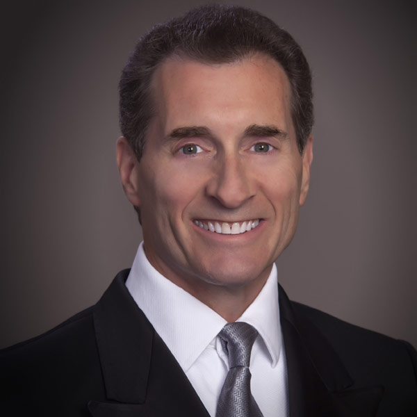
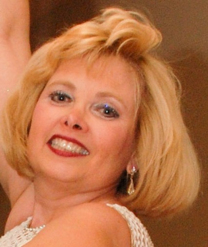
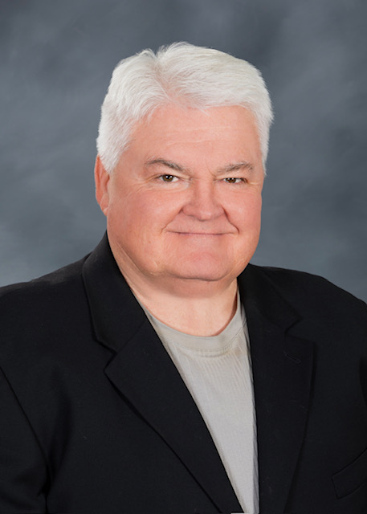
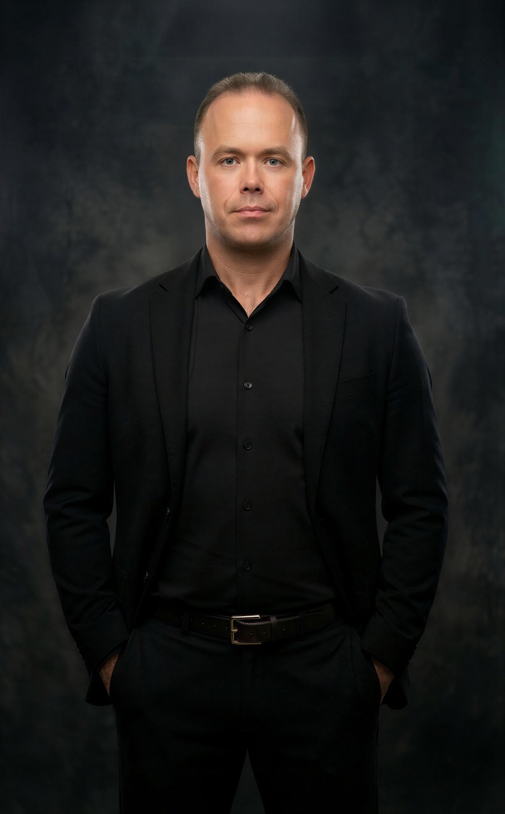
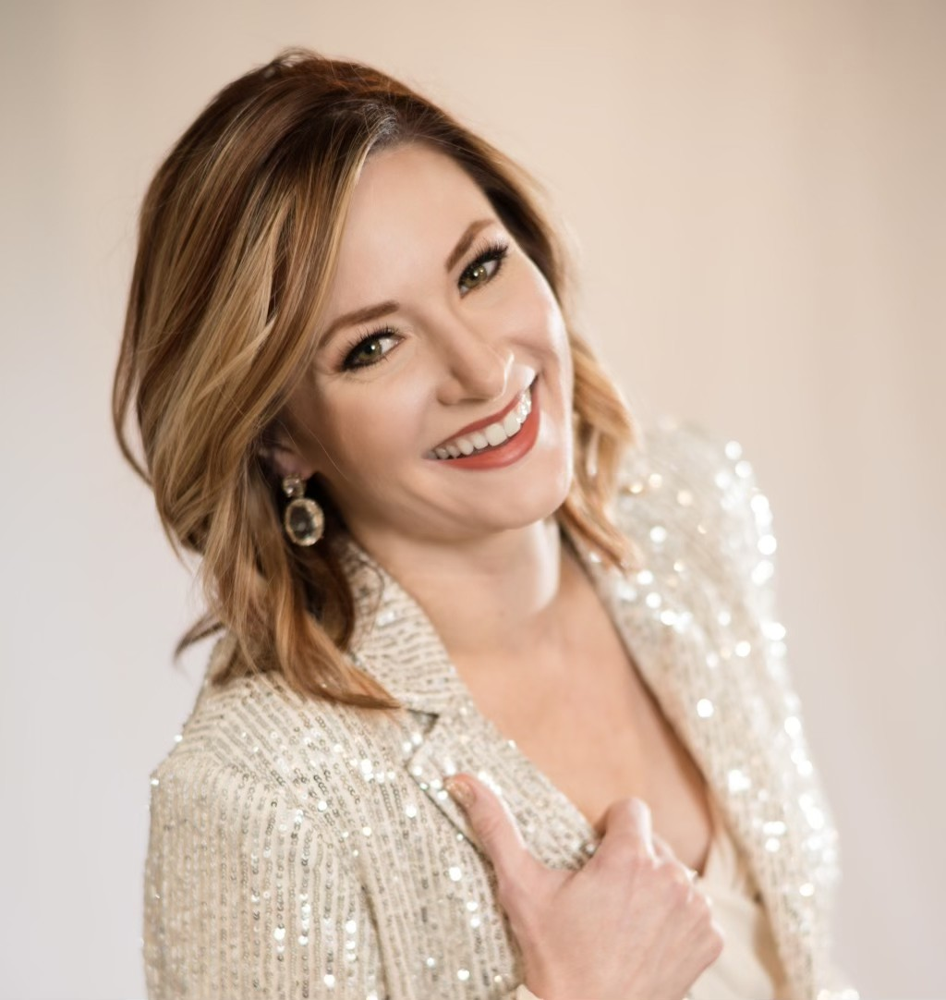
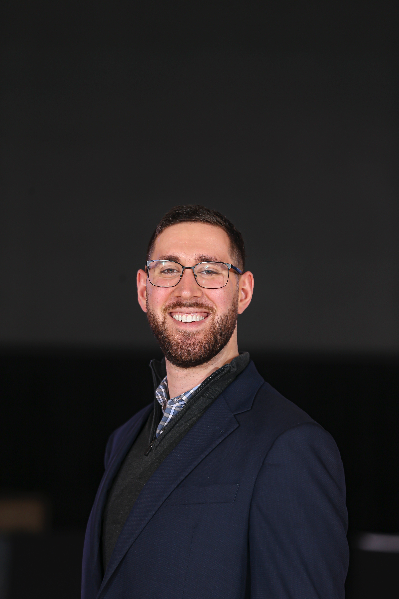
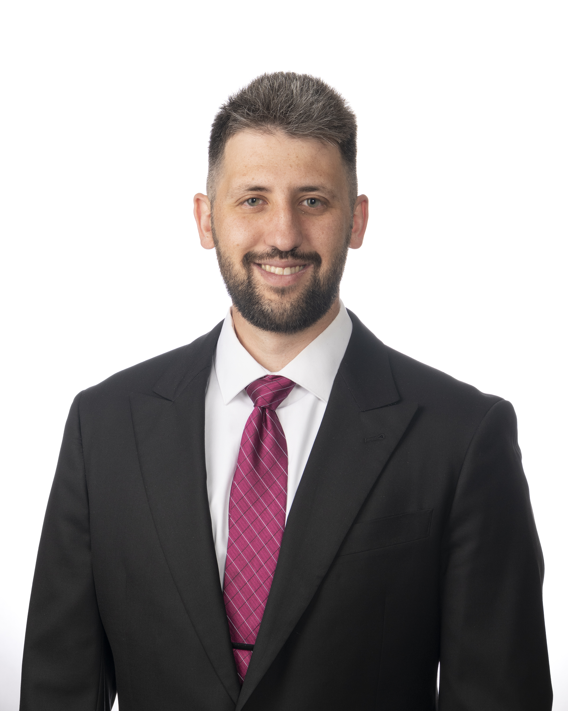
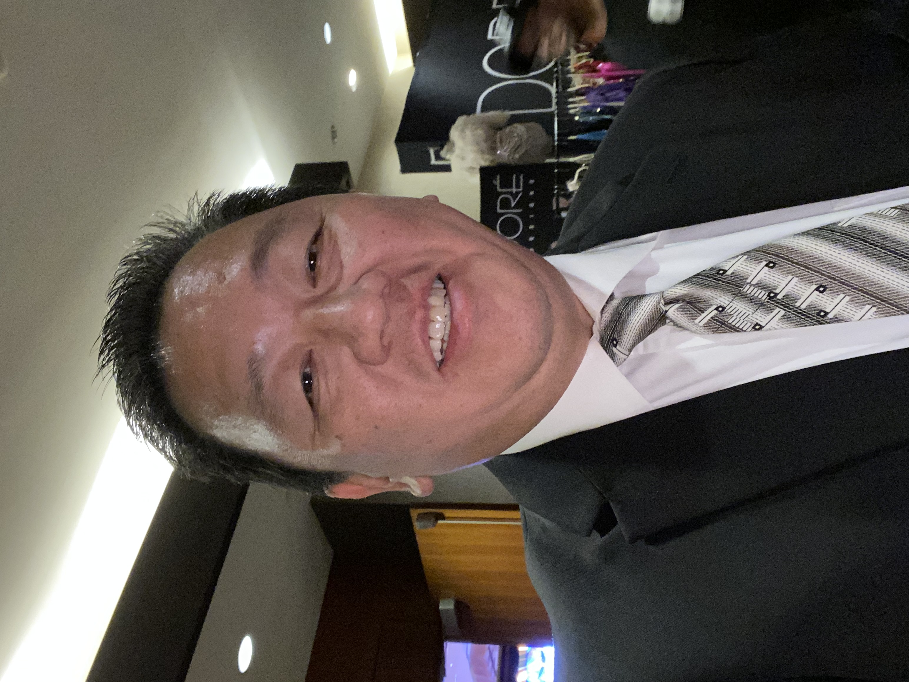

Our Officials

Daniel Calloway
Chairman of Judges
Daniel Calloway is a World Championship Chair of Judges and World Championship Adjudicator, with 47 years of experience teaching, competing professionally, and adjudicating in the dance world. He has served as Chair of Judges at over 200 competitions, including World, North American, and US National Championships, and has lectured and coached at more than 200 congresses and training camps worldwide. In 1985, he became the youngest dual fellow in the world. Daniel has trained over 100 professionals for their teaching and judging exams and has earned multiple "Professional of the Year" and "Top Teacher" titles throughout his career. His expertise has been featured in over 20 television and film appearances, including Comcast's North American Championships and the United States DanceSport Championships. He is also a published author, contributing articles and columns to leading publications such as American Dancer, Dance Beat, Topline, DanceWeek, and the Ballroom World Dance Book.
Dana Edwards
Judge
Dana has been a professional dance educator since 1992, building a distinguished career as both a competitor and a leader in the DanceSport community. A retired NDCA/FADS Open Professional Smooth and Rhythm Champion, Dana brings decades of competitive excellence to her work as a World DanceSport Federation and USA Dance Adjudicating Official, Invigilator, and Scrutineer, as well as USA Dance Chairman of Adjudicators. She currently serves as College Network Director for USA Dance and volunteers her time helping plan the organization's National Championships. Since 1997, Dana has been a dedicated presence with the DanceSport program at OSU, including 10 years as Head Coach, shaping generations of collegiate dancers.

Deborah Davis
Judge
Deborah Davis is the co-owner and Director of Ballroom Break Dance Studio in Lewisberry, P.A. Deborah has over 40 years of teaching experience, instructing in smooth, Latin, swing, hustle, theatre arts, ballet, and jazz, both American and International Styles. She has worked for various cruise lines as a guest teacher and entertainer. Deborah choreographed and directed shows in the Catskills as well as locally. Deborah is certified by the world's most prestigious professional ballroom dance organization, the American International Dancers Association (AIDA), formerly the U.S. Imperial Society of Teachers of Dance (U.S.I.S.T.D), as teachers, competing professionals, and adjudicators. Deborah is an Adjunct Faculty Member at Penn State Harrisburg, and formerly Susquehanna University, and HACC. Deb developed the Ballroom Dance Programs in all 3 of these colleges.

Frederic Shipley
Judge
Frederic Shipley is the co-owner and President of Ballroom Break Dance Studio in Lewisberry, PA Fred has over 45 years of teaching experience, instructing in smooth, Latin, swing, hustle, theatre arts, ballet, and jazz, both American and International Styles. He has worked as a guest teacher and entertainer for various cruise lines and in the Catskills. Fred is certified by the most prestigious professional ballroom dance organization in the world: the American International Dancers Association (AIDA), formerly, the U.S. Imperial Society of Teachers of Dance (U.S.I.S.T.D) as teachers, competing professionals, and adjudicators.
Ekaterina Wilder
Judge
Ekaterina Wilder is an internationally recognized DanceSport professional, adjudicator, and coach who has represented the United States at the highest levels of international competition. A USA Dance Professional Representative to the WDSF PD World Championships in 10-Dance, Ballroom, Latin, and Show Dance, she is a multiple-time World and US Professional 10-Dance Finalist and a Top 24 Open Professional Ballroom Finalist at the Blackpool Dance Festival. Her performance credits include FOX's Stars of Latino DanceSport Championships, the Tattersall's Australian DanceSport Championships, the theatrical production Ballroom, and an international tour of Egypt with Take the Floor. A USA Dance National Adjudicator with A+, B+, C+, and D+ teaching certifications, Ekaterina has officiated National Championships and international events including the World Games, and has coached numerous finalists and World Team members. She owns and heads Imperial Ballroom Dance Center in the New York Metro Area, bringing a master's-level background in Physical Therapy and Kinesiology to her coaching. Ekaterina is also known for her community impact, including an inclusive dance program for children on the autism spectrum and a therapeutic movement program for survivors, and for her current work integrating movement science, psychology, and performance methodology to help clients achieve peak personal and professional success.

Ruslan Wilder
Judge
Ruslan Wilder is an internationally recognized DanceSport professional with more than three decades of experience as a competitor, Licensed National and International Adjudicator, championship coach, and event host. Born in St. Petersburg, Russia, he began dancing at six and relocated to the United States in 1997, where he and partner Ekaterina "Ekaterina" Wilder represented the country at the World Professional International Standard and 10 Dance Championships, earning finalist titles at numerous top international events. Today, Ruslan is known for coaching dancers of all levels with technical precision and musicality, adjudicating with fairness and integrity, and serving as a polished Master of Ceremonies for galas, corporate functions, arena productions, and DanceSport competitions worldwide — including work with Van Wagner. He has been featured on ABC, NBC, FOX, TNT, and CNN, and remains a trusted name for organizers seeking excellence and international expertise.

Amanda Wolf
Judge
Amanda Wolf comes to us with 20 years of experience as a ballroom dance professional. She has competed professionally in all four ballroom dance styles and was a finalist in both Open and Rising Star American Rhythm and Smooth. She owns Amanda Wolf Productions, a choreography and coaching studio in Pittsburgh.

James Page
Judge
James Page has been a professional ballroom coach, competitor, choreographer, MC, and performer at multiple venues in Pittsburgh. As a social dance specialist, he is currently the coach for the CMU Ballroom Dance Club. "If it's not fun, it's not dancing!"

Maja Servé
Judge
Maja Servé is a distinguished five-time Danish Champion in Professional Standard. She has been a finalist in world-class competitions, including the World Championship, European Championship, British Open, International Championship, United Kingdom Championship, German Open, US Ballroom Championship, Japan Open, and Dutch Open. An IDTA Fellow in both Latin and Standard and a NADTA Member in Standard, Latin, Smooth, Rhythm, and Theater Arts, Maja has also served as a judge representing the US in numerous international championships. Maja co-founded the Body School of Dancing and Teaching and has coached numerous champions across various dance styles for over thirty years in the US. Her extensive training and background in accent teachings and human potential add a unique perspective to her coaching. Additionally, she was trained as a Life Coach by Bob Proctor, who is known for the influential movie and book “The Secret.” Maja is also a published author with several books on dance and tourism, and she offers an online program for bronze-level dancers.

Benjamin Haut
Scrutineer
Ben Haut earned his scrutineering licence in 2023 and has successfully scrutineered collegiate, amateur, and professional competitions, including USA Dance Nationals for the past three years. Ben began his ballroom journey in 2016 as a member of The Ohio State University’s ballroom team, with whom he competed as an amateur and served as Treasurer. During his undergraduate studies, he volunteered with a local studio to host ballroom showcases and weekly social Latin dance events. Currently, Ben is a mentor to Ohio State's undergraduate competitors under the supervision and guidance of their professional coach.

Richard Semlitz
MC
An alumnus of Ballroom at Maryland with roots in childhood musical theater, Ricky has spent over a decade anchoring the dance community. Having directed DCDI for ten years and Dance Legends for three, he is now a prominent MC for Nationals, regional qualifiers, and collegiate competitions, alongside occasional roles as a scrutineer or chair of judges.

David Ho
DJ
David Ho is a dynamic and versatile DJ known throughout the ballroom and social dance community for his ability to energize dance floors across a wide range of styles and settings. He currently serves as resident DJ at several premier studios, including Starlight Dance Center in Nutley, NJ, where he spins weekly Friday night socials and bi-annual student showcases, and Danznik Studios in both Westchester and New York City, providing music for student showcases and Latin practice rounds. His residencies also include Le Pari Dance Center's Saturday night socials in Scotch Plains, NJ, and Left Side Leading's Sunday afternoon Tea Dance with You Should Be Dancing...! in NYC. David brings his expertise to Fred Astaire Dance Studios in both Warren, NJ and Bardonia, NY, curating monthly themed socials, Rhythm and Smooth practice rounds, and student showcase events. He is also the go-to DJ for Vitti's Dance Studio's Saturday night socials in Danbury, CT, the Staten Island Ballroom Dancers Dinner Dance, and competition sessions at the NJ Hustle Congress. Beyond the studio circuit, David is a familiar presence at collegiate dancesport competitions nationwide, having provided music for events including the CMU Carnegie Classic, RPI, Tufts Comp, Harvard Beginners, SUNY Stony Brook East Coast Fireball, and the UMass Minuteman Dancesport Classic.
Carnegie Classic is a USADance Challenge Competition, meaning it can be used to earn points towards qualifying at USADance Nationals. You do not need a USADance membership to compete.